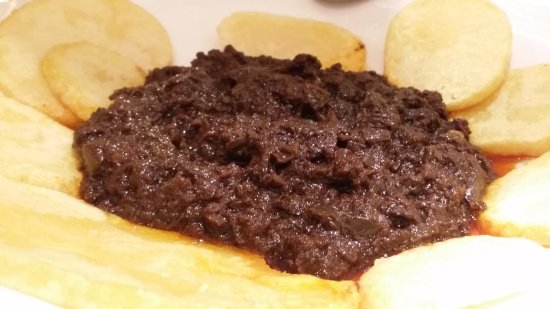

| Autor: Alejandro Rivera Casaseca Fecha:20/01/2021 |
León |
||||||||
| Inicio |
|
||||||||
| Burgos | |||||||||
| Ávila | |||||||||
| Palencia | |||||||||
| Salamanca | |||||||||
| Segovia | |||||||||
| Soria | |||||||||
| Valladolid | |||||||||
| Zamora | |||||||||
| Pagina de contacto | |||||||||
LocalizaciónLocalidadesGrandes ciudades : León, Ponferrada, San Andrés del Rabanedo, Villaquilambre, Astorga, La Bañeza, Bembibre, Villablino, Valverde de la Virgen, Valencia de Don Juan, Cacabelos, Sariegos, Fabero, Camponaraya, La Robla, Carracedelo, La Pola de Gordón, Cistierna, Toreno, Santa María del Páramo, Villarejo de Órbigo, Villafranca del Bierzo, Chozas de Abajo, Sahagún, Benavides, Carrizo de la Ribera, Valdefresno, Torre del Bierzo, Santovenia de la Valdoncina, Vega de Espinareda, Cuadros, Santa Marina del Rey, Villaturiel, Villadecanes, San Justo de la Vega, Onzonilla, Boñar, Cubillos del Sil, Mansilla de las Mulas y Castropodame. Mas informaciónGeografíaLa provincia de León se localiza en la parte noroccidental de la península ibérica, en la comunidad autónoma de Castilla y León (España). Limita por el norte con el principado de Asturias y con Cantabria, donde la cordillera Cantábrica juega el papel de frontera natural entre la meseta Norte y la costa cantábrica. Por el oeste, son distintas unidades del macizo Galaico-Leonés quienes ejercen de frontera con las provincias gallegas de Orense y Lugo. Al sur limita con las provincias de Zamora y Valladolid y al este con la provincia de Palencia, sin que exista una frontera natural entre ellas. Volver al principioHistoriaLa historia de la ciudad de León se remonta a la Edad Antigua, cuando a mediados del siglo I a. C. la Legio VI Victrix estableció su campamento entre los ríos Bernesga y Torío, cerca de la ciudad astur de Lancia, y a la cual siguió la Legio VII Gemina, que permanecería hasta principios del siglo V. Incorporada en 856 al reino de Asturias, desde 910 se convirtió en capital del reino de León, dotándose de un fuero en 1017, y acogiendo acontecimientos como la celebración, en 1188, de las primeras cortes europeas. Sin embargo, tras la unión del Reino a Castilla, la ciudad inicia un largo periodo de decadencia que sólo acabará con la llegada del ferrocarril, en el siglo XIX, y con la industrialización, ya en el siglo XX. Volver al principioCulturaEn León hay muchas actividades culturales para hacer, como visitar monumentos, iglesias, sus numerosos municipios, mencionados antes, etc. En el siguiente enlace, podrá encontrar todas las actividades culturales que podrá realizar en su visita a Leon. Actividades culturales de León Volver al principio NaturalezaEstos son los 10 mejores parajes naturales de la provincia de León: Parque Nacional Picos de Europa, Cuevas de Valporquero, Guheko, Hoces de Vegacervera, Bosque del Faedo, Pantano de Riaño, Valle del Silencio, Lago de Carucedo, Playa Fuvial, Cuevas de Llamazares Si desea conocer más sobre estos parajes, o sobre otros que no se han mencionado, puede acceder a ellos a través de estos enlaces: Volver al principioTradicionesUna de las tradiciones mas importantes de León es la Semana Santa. La tradición de la Semana Santa leonesa se remonta al siglo XVI, y ya desde el Siglo XIII se tienen noticias de la asistencia de la Corporación Municipal “bajo mazas” a la Solemne Procesión Oficial del Santo Entierro, en la tarde noche del Viernes Santo, donde pujan la Virgen de la Soledad, junto con sus braceros. También la pluma de Gustavo Adolfo Bécquer describió el impresionante encuentro entre la Dolorosa Y San Juan, en la mañana del Viernes Santo, a la vera del Consistorio Viejo, en la Plaza Mayor. Y es que la Semana Santa leonesa es inagotable en momentos emotivos y en la belleza de sus imágenes. A lo largo de díez días, desde la espectacular salida en la tarde del Viernes de dolores (20:00 h) de la Virgen del Camino, conocida popularmente como la del Mercado, hasta la suelta de palomas el Domingo de Resurrección en la Plaza de la Catedral, leoneses y visitantes comparten en esta Semana Santa singular una experiencia inigualable. Este es un vídeo de una de las fiestas de León: Volver al principio OtrosGastronomíaLa gastronomía de la provincia de León es el conjunto de platos, preparaciones y costumbres culinarias de la provincia de León (España).1 La provincia posee fuertes contrastes geográficos, desde las regiones montañosas del norte que tocan la cordillera cantábrica hasta el páramo leonés. Posee zonas de variada riqueza agrícola y con personalidad propia como son, por ejemplo El Bierzo y La Cabrera.2 Tierra donde el cerdo produce numerosas variantes de chacinería. La provincia posee una fuerte personalidad en la preparación de algunos platos, no es de extrañar que muchas de las preparaciones y alimentos posean el localismo "de León", como por ejemplo: morcilla de León, cecina de León, o el chorizo de León. Existen en la provincia dos cocinas bien diferenciadas. La cocina del Bierzo se ve muy influenciada por las cocina asturiana y gallega (un ejemplo es la cachelada leonesa o patatas cocidas con chorizo, o el mismo lacón con grelos que puede verse por estas tierras leonesas). La otra región es la comprendida por Astorga, esta cocina maragata, se caracteriza por platos recios y cargados, uno de sus exponentes es el cocido maragato. Ambas vertientes integran la cocina leonesa La siguiente imagen es un ejemplo de gastronomía de la provincia de Ávila, son las patatas revolconas Volver al principio |